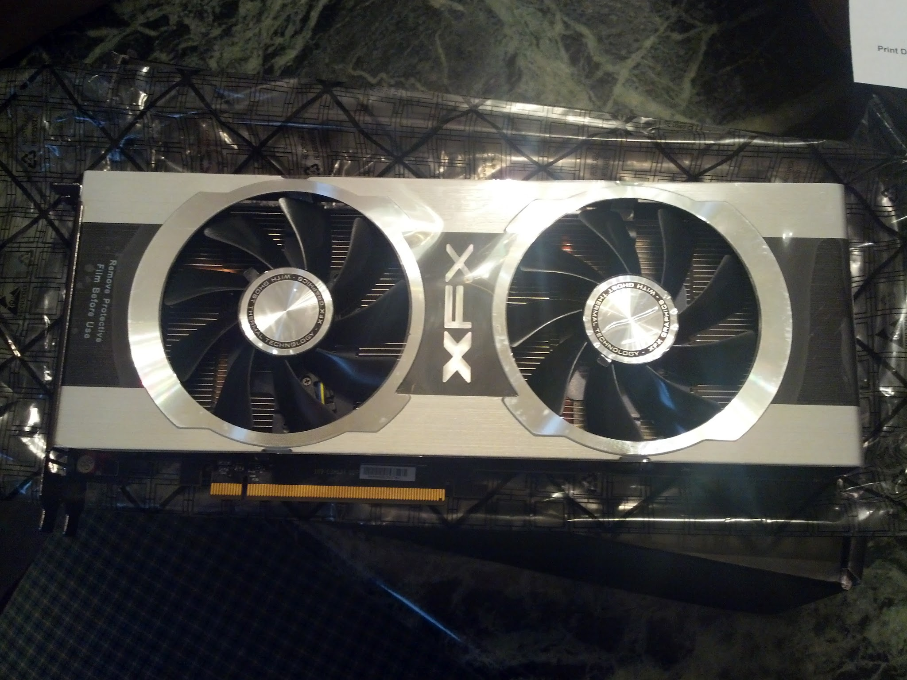
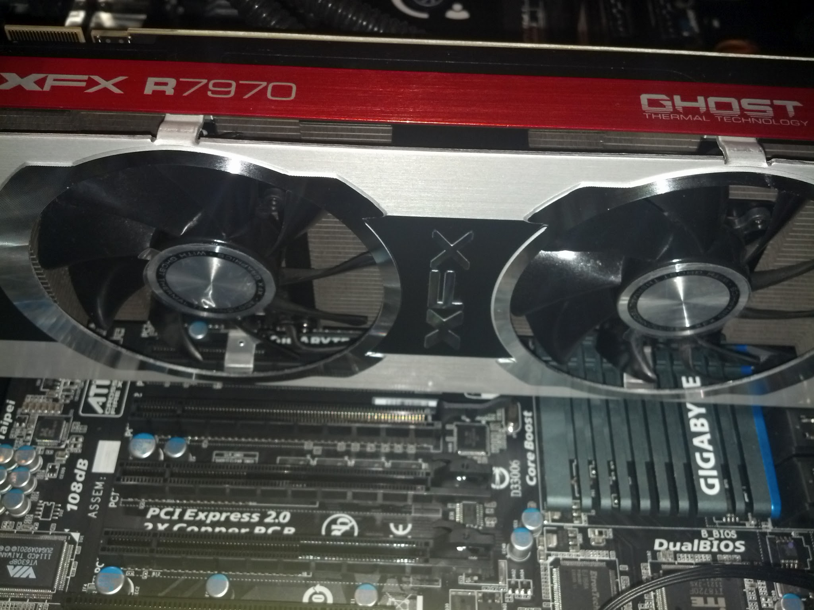

The XFX 7970R Double Dissipation Black with AMD Radeon HD 7970 Gigahertz Edition Graphics Processing is quite a mouthful but you will have no problems spilling anything in there while your jaw is on the floor. Mind blowing graphics capability and frame rates are no longer a compromise when this latest GPU from AMD is installed into your gaming system.
{kind=link}
XFX decided to stick with the stock clocking and setting with their interpretation of the Radeon HD 7970 Gigahertz edition GPU from AMD, and there is no immediate need to mess with what the engineers threw into this card. Not to outdone by Nvidia when they released the 670 only six months after the original Radeon HD 7970 was announced. AMD quickly responded with the 7970 GHz edition with ups the GPU processing to 1005MHz from 950MHz making it the first production GPU to clock over 1GHz.
Most manufactures would have been satisfied with that accomplishment but AMD took things one step further by not only increasing the amount of RAM from 1.5 GB to 3GB and increasing the RAM clock speed from 1600MHz to 1866MHz. All this beefing up leads to the 7970 GHz edition becoming the first GPU to surpass 5 Teraflops.
{kind=link}
What this simply means for you is that dropped frame on the highest settings in games is something you over hear your opponents complaint about as you are whizzing past them.I ran Battlefield three on ultra settings and became amazed while watching Fraps hold steady at 99 fps during in-game rendered sequences, then drop to no less than 52 fps during game play. Since Dice worked closely with AMD optimizing Battlefield 3 to these cards and drivers, I expected nothing less.
Afternfiring up Arkham City I quickly realized that the in game optimizations are what really give you the amazing frame rates and stats. That said this card is no slouch when it comes to playing a titled optimized for an Nvida GPU. Benchmarks were on par with and in msomeost cases better than that of the 670 by Nvidia when playing titles maoptimized for their competition.
AMD managed to build a fully loaded graphics card and still manage to keep it under $500. We can all dream a little and if the new flagship is a little outside of your budget take a look at our review of the Radeon HD 7970 which has fallen to under $400 with this latest release. Along side the 7970 GHz edition AMD also released the 7850 GHz edition which is a sub $300 card which is powerful and easily fits within many gamers upper limits for budget gaming and is more than adequate to handle the most intensive games. Check back later for our full write-up of the XFX 7970R.
Back to Top